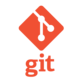

Hello, I'm
Sourabh Rajeev Badagandi
I'm a Software Engineer.
01 WHO AM I?
About me
Hi, I am Sourabh. I am in my final semester of Masters in Software Engineering at Concordia University, Montreal.
I have been engaged in software engineering professionally for over 4 years now, but the origin of when I started working with computers lies far further back than that. Computers, technology and programming have always fascinated me, it has been a live long dedication to this hobby and profession that brought me to my current self.
I enjoy turning complex problems into simple, beautiful and intuitive solutions. I prefer to keep learning, continue challenging myself, and do interesting things that matter.I’m a fast learner, able to pick up new skills and juggle different projects and roles with relative ease.
I have worked on various software implementations ranging from device-level drivers, embedded firmware, application development, automation, machine learning models as well as web service development.
For me software engineering is about:Working with great people, inspiring others, finding the best solutions and having fun!
Apart from the hustle, my passions include hiking, esports, reading, cooking and watching documentaries. These days I've also started enjoying Formula 1 and listening to podcasts.
03
My
Skills
Programming Languages
Version Control
- 
- TortoiseSVN
Defect Tracking

Other Tool & Frameworks

Other Skills
Engineering Software Systems is complex and hard. Unlike traditional engineering, managing software projects is not straightforward or easy.Here are some things I'm good at, to help ease the pain:
- Problem Solving: I can take vague problems and requirements and break them down into steps and solutions.
- Systems Thinking: I'm good at thinking abstractly and putting together systems with many moving parts.
- Communicating: I can explain things clearly, communicate problems quickly and write accurately and concisely.
- Organising: I can self-manage, work to deadlines, organise projects and present well-structured and complete deliverables.
02
My
Professional Experience
-
Jan 2020 - Present
Software Developer Intern
Ciena: Montreal,
Projektmanagement mit Scrum
Ständiges Verbessern des agilen Entwicklungsprozesses beispielsweise durch Grunt, Yeoman, GIT, JIRA und BrowserStack. -
May 2019 - Dec 2019
Software Engineer Intern
Dassault Systemes: Montreal,
- Developed an Environment Management tool that aids in maintenance of multiple Dev/test environments, ensuring each environment is consistently set up, configured, and available as and when required.
- Containerized core applications of 3D Experience platform, improving developer workflow, increasing scalability, and optimizing speed.
- Helped to trace complex build problems, release issues, and environmental issues.
- Conducted knowledge sharing sessions with off-shore teams.
Project Highlights
- Took on the challenge of containerizing the 3D EXPERIENCE platform, designed and developed a prototype to install the 3D EXPERIENCE platform on a standalone environment or a distributed environment.
- Designed a solution which can be readily incorporated into existing or new CI/CD pipelines.
- Successfully demoed the product to an internal client.
- Reduced the deployment and configuration time of the 3D Experience Platform by 4 times, also with minimal user interaction.
-
Sep 2015 - Aug 2018
Software Engineer
Bosch Engineering and Business Solutions: Bengaluru(Bangalore),
- Developed software for IoT products, that could connect securely to the internet and provide remote service management, sales management, asset management, and fleet management solutions.
- Analyzed and designed program changes. Reviewed and updated requirements documentation, wrote design documents (UIRD, TRD, SRS, and SDD).
- Supported programming changes during quality assurance, user acceptance testing, and post implementation.
- Managed strict project timeline successfully by coordinating meetings across time zones and presenting findings to colleagues via teleconference.
- Assisted and mentored interns to bring them up to speed quickly.
Project Highlights
- Smart Connected Cooler:
- Instrumental in design and development of the firmware.
- Spear-headed the End of Line(EOL) production efforts and was responsible for development of EOL Test Software.
- The product was chosen the IoT Product of the year in Big Data Excellence Awards in 2018.
- ECU Analyser and Simulator:
- Was key player in design and development of cross platform GUI based application which provided simulation, analysis and real-time tracing functionalities for a car ECU.
- The product replaced an expensive vendor-supplied product and reduced costs by 60% within the organization
- Bosch XDK Proof of Concept:
- Volunteered to develop an innovative solution using the then newly launched Bosch XDK. Built a non-intrusive vending machine maintenance system. Successfully interfaced it with the Bosch Cloud platform that provided useful analytical information.
- Demonstrated the concept to the Business Head of Bosch India. The project also attracted one of the largest coffee enterprises of India.
My
Research Experience
-
Aug 2018 - Dec 2018
Research Intern
Indian Institute of Science: Bengaluru(Bangalore),
- Worked on evaluating the use of blockchain technology in health care applications. Produced a design for global blockchain model to exchange medical records securely among multiple hospitals.
- Conducted RTOS session in the ”Security and Reliabality of Embedded Systems” Workshop organized for senior engineers of Ashok Leyland.
-
Jan 2015 - Apr 2015
Project Trainee
Indian Space Research Organization: Bengaluru(Bangalore),
- Built a hazard detection and avoidance system for autonomous planetary landing that supported features like, feature selection and hazard identification, feature transformation and hazard mapping, and safe site selection.
03
My
Education
-
Jan 2019 - Dec 2020(expected)
Master of Engineering in Software Engineering
Concordia University: Montreal,
-
Sep 2011 - Jun 2015
Bachelor of Engineering in Electronics and Communication
CMR Institue of Technology: Bengaluru(Bangalore),
03
My
Projects
04
Contact Me
howdy.sourabh@gmail.com